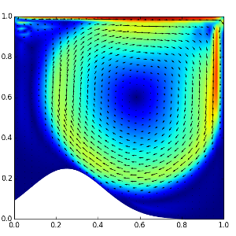

About
Hoitinga & van Zwieten (HvZ) Computational Engineering is a young consultancy
company with expertise in computer simulation of physical processes. Examples
of such processes are the thermo-mechanical deformation of solid structures,
multiphase fluid flows, and fluid-structure interaction. Computer simulation
physics is increasingly gaining importance and is currently an essential part
in the designing phase of any product.

To simulate physics one requires a large set of skills. To start one must be
able to translate physics to mathematical model equations (physics,
mathermatics). The model equations are then transformed such that they can
be solved by a computer (numerical mathematics) and, subsequently, a
computer must be instructed on how to solve the often large systems of
equations (linear algebra, computer programming). Finally, a solution
to the model equations must be properly visualized and analysed. It requires
years of study before one is able to set up a proper simulation.
The constrained on study resulted in separation of expertise. This resulted
in the foundation of companies that develop simulation-software, often with a
focus on specific physics. For instance, there now exist software tools that
contain only models associated with fluid dynamics or only solid mechanics.
Other companies were created that specialized in using these - usually
expensive - software tools to advise and help clients in their design
process.

At HvZ we believe that no physics problem is identical and, therefore,
always requires dedicated attention. That is, each problem requires a complete
analysis of the physics and mathematics, proper choice of numerical methods and
tailored software tools. This is not always possible using generic tools, in
particular not when the physics problem is not restricted to a single field,
i.e., one often has to deal with fluids interacting with solids
(fluid-structure intereaction) or thermal behaviour (heat
flow) resulting in mechanical deformation (thermo-mechanics).
Many tools cannot handle such complicated mixture of different problems.
However, because HvZ possess all necessary expertise to conduct proper computer
simulation of multi-physics problems, it enables them to help clients with
their specific needs if it comes to multi-physics problems.
Way of Working
HvZ is specialized in design of tailored simulation solutions in a design. A
design is not restricted to the manufacturing of products, but also includes
production processes. An example where HvZ plays an important role is the
implementation of specially designed simulation tools on lithography tools to
improve the performance of chip manufacturing. In general, when HvZ is asked to
design a computer simulation for a client, the following steps are followed.
1. Problem formulation
The first step is to discuss the problem with the client and to
derive/determine the appropriate model equations. Based on what a client
explains, HvZ formulates a model problem, explains its range of applicability
and limitations. It is not expected nor is it necessarily that a client has a
mathematical background. The aim in this phase is to obtain a thorough
understanding of the issues at hand and, moreover, what questions need to be
answered by means of computer simulation.
2. Implementation
After the aforementioned step, HvZ has sufficient information to start
working on the design of a computer simulation. Regular updates and meetings
ensure a converging process towards a satisfying result. Once the simulations
are available HvZ presents their findings.
3. Analysis
Once the client is satisfied with the results the project is finished. HvZ
develops their own software tools for computer simulation. These tools, known
as Nutils, are open source and therefore free to use. If a client has
interest in recomputing the results they are free to obtain the tool. This can
be an interesting option to, e.g., conduct parameter studies to obtain further
insight. HvZ can help with a short training on the software and can even
provide a simple user interface.
The Nutils project (software)
The Nutils project is a collaboration
between HvZ and the Multiscale Engineering Fluid Dynamics (MEFD) Group at
Eindhoven University of Technology in which advanced, open source software
tools are developed for complicated physics simulation. HvZ helps industry and
research in applying and developing high end simulation methods, respectively,
and the MEFD group provides HvZ with the latest, most advanced techniques in
the field of computer simulation of physics.
HvZ develops dedicated software tools that can be licenced to the client at
request. These are typically specific tools for a given task, though with as
many buttons as desired for the design process. For example, the software can be
specific for computing the temperature distribution in a pipe, but may allow the
thickness and inlet temperature to vary to examine the effect.
The set of requirements and desired flexibility of the tool will be discussed at
project intake, where it is our expertise to translate a set of engineering
demands to software requirements.